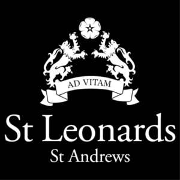
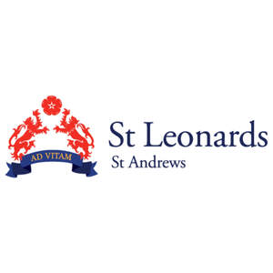
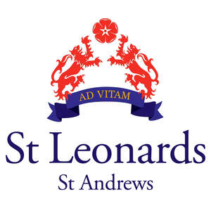

Trade Mark Journal No.2025/034 22 August 2025
UK00004245719 7 August 2025 (9,14,16,18,21,24,25,28,30,35,41,43)
Mark 1
Mark 2

Mark 3

Mark 4

The mark consists of a series of logos as shown. No claim is made to any particular background colour. The marks may be used on various backgrounds and the colour of the background is not a feature of the trade mark.
- Class 9
- Downloadable Educational course materials; calculators; covers, and cases for mobile phones, accessories for mobile phones; magnets; sunglasses and cases for sunglasses.
- Class 14
- Precious metals and their alloys; jewellery, costume jewellery, precious stones; horological and chronometric instruments, clocks and watches.
- Class 16
- Paper and cardboard; printed matter; books; photographs; stationery; artists’ materials; paint brushes; printed publications; paint boxes for children.
- Class 18
- Bags; leather and imitations of leather; trunks and travelling bags; handbags; rucksacks; purses; wallets; sports bags; umbrellas; equestrian equipment; saddles; saddle covers.
- Class 21
- Household or kitchen utensils and containers; mugs; drinking glasses; water bottles.
- Class 24
- Textiles and textile goods; towels; bed and table covers; travellers’ rugs, textiles for making articles of clothing; duvets; covers for pillows, cushions or duvets.
- Class 25
- Clothing, footwear and headgear; sports clothing; sports footwear; sports headgear [other than helmets]; equestrian clothing.
- Class 28
- Games and playthings; playing cards; gymnastic and sporting articles; decorations for Christmas trees; sports equipment; golf bags; golf club covers; toys.
- Class 30
- Coffee, tea, cocoa, sugar, rice, tapioca, sago, artificial coffee; flour and preparations made from cereals, bread, pastry and confectionery, ices; honey, treacle; yeast, baking-powder; salt, mustard; vinegar, sauces (condiments); spices; ice; sandwiches; prepared meals; pizzas, pies and pasta dishes.
- Class 35
- Advertising; business management; business administration; office functions; retail services connected with the sale of educational course materials, calculators, covers and cases for mobile phones, accessories for mobile phones, magnets, sunglasses and cases for sunglasses, precious metals and their alloys, jewellery, costume jewellery, precious stones, horological and chronometric instruments, clocks and watches, paper, cardboard and goods made from these materials, printed matter, books, photographs, stationery, artists’ materials, paint brushes, printed publications, paint boxes for children, bags, leather and imitations of leather, trunks and travelling bags, handbags, rucksacks, purses, wallets, sports bags, umbrellas, household or kitchen utensils and containers, mugs, drinking glasses, water bottles, textiles and textile goods, towels, bed and table covers, travellers’ rugs, textiles for making articles of clothing, duvets, covers for pillows, cushions or duvets, clothing, footwear and headgear, sports clothing, sports footwear, sports headgear [other than helmets], equestrian clothing, games and playthings, playing cards, gymnastic and sporting articles, decorations for Christmas trees, sports equipment, golf bags, golf club covers, equestrian equipment, saddles, saddle covers, toys, coffee, tea, cocoa, sugar, rice, tapioca, sago, artificial coffee, flour and preparations made from cereals, bread, pastry and confectionery, ices, honey, treacle, yeast, baking-powder, salt, mustard, vinegar, sauces (condiments), spices, ice, sandwiches, prepared meals, pizzas, pies and pasta dishes.
- Class 41
- Education; providing of training; entertainment; on-line entertainment; sporting and cultural activities; arranging and conducting discussions, visits and projects for educational purposes; tuition services; golf academy services; golf tuition; organising of golf tournaments; sports tuition, coaching and instruction.
- Class 43
- Services for providing food and drink; temporary accommodation; restaurant, bar and catering services; provision of holiday accommodation; booking and reservation services for restaurants and holiday accommodation; creche services.
ST. LEONARDS SCHOOL
Representative: Kirsty Stewart